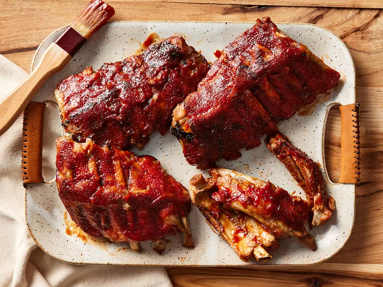

Côtes levées de dos de bébé à la mijoteuse
Description
Ces côtes levées à la mijoteuse sont les meilleures — elles sont toujours parfaites ! Elles cuisent dans une mijoteuse jusqu'à ce qu'elles soient tendres, puis sont recouvertes de sauce barbecue et cuites au four pour des côtes qui se défont. Parfait pour la semaine, car la mijoteuse fait la plupart du travail !
Ingrédients
- 3 livres de côtes levées de dos de bébé, parées
- sel et poivre noir moulu, au goût
- ½ tasse d'eau
- ½ oignon, tranché
- 1 gousse d'ail, hachée
- 1 bouteille (18 onces) de sauce barbecue
Instructions
- Rassemblez tous les ingrédients.
- Assaisonnez les côtes avec du sel et du poivre.
- Versez 1/2 tasse d'eau dans la mijoteuse, puis ajoutez les côtes. Répartissez l'oignon et l'ail sur le dessus. Couvrez et faites cuire à feu doux pendant 8 heures ou à feu vif pendant 4 heures.
- Lorsque les côtes sont presque terminées, préchauffez le four à 375 degrés F (190 degrés C).
- Transférer les côtes de la mijoteuse sur une plaque à pâtisserie ; jeter l'oignon et l'ail. Enrober les côtes de sauce barbecue.
- Cuire les côtes levées au four préchauffé jusqu’à ce que la sauce caramélise et colle à la viande, 10 à 15 minutes.
- Apprécier!